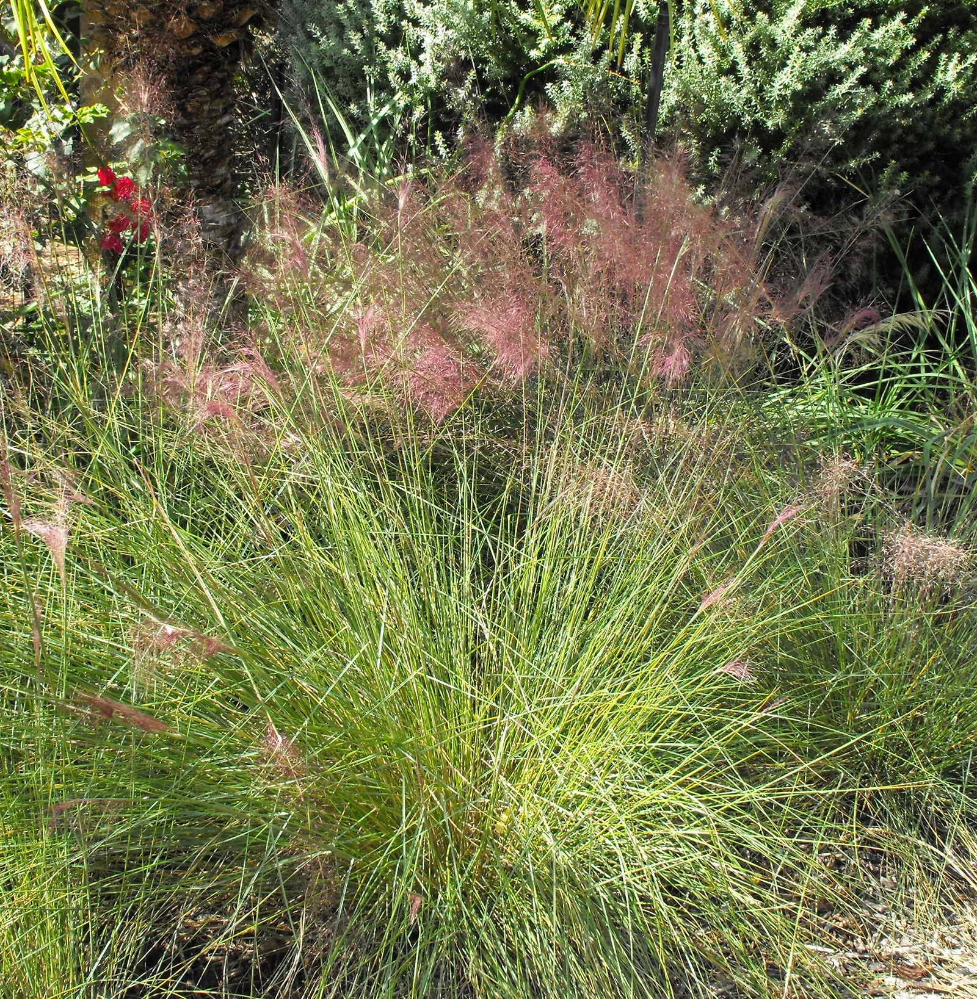
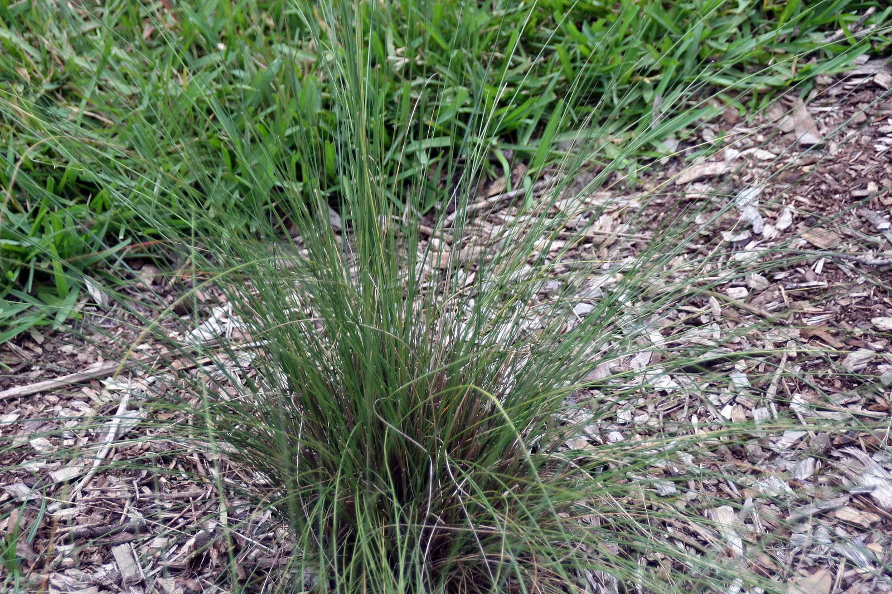
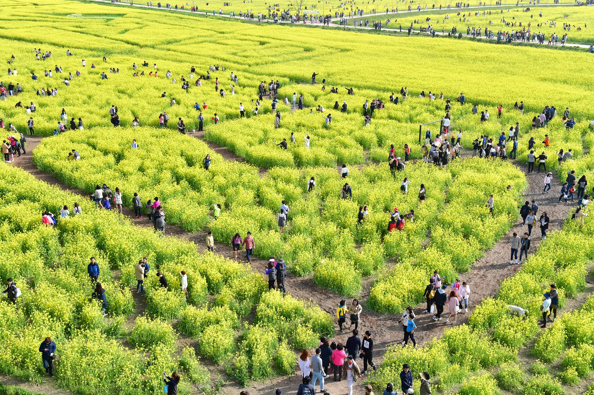
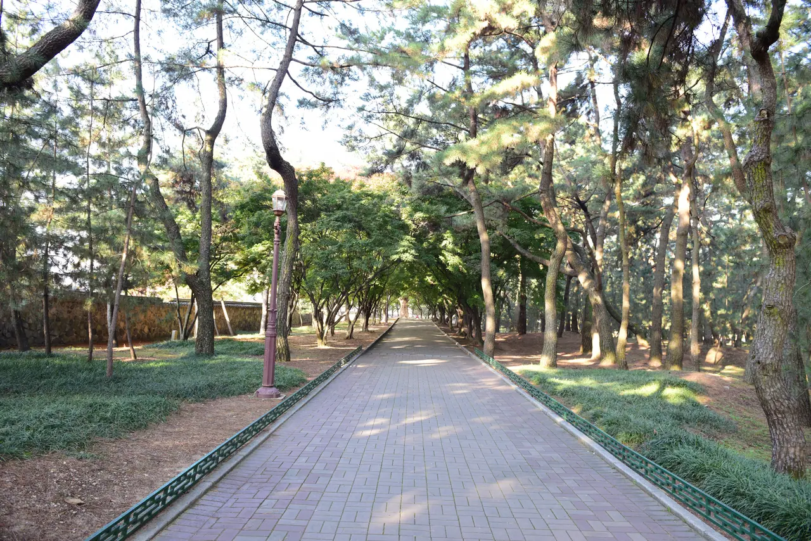
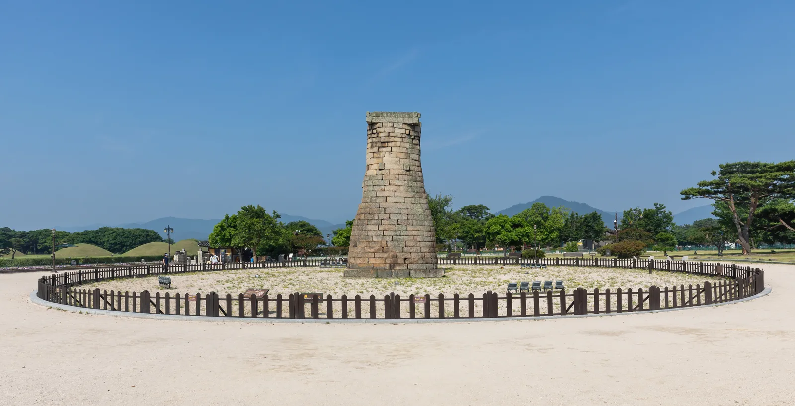

▲ 핑크뮬리(Muhlenbergia capillaris). 국내 명소는 이 풀을 대규모 군락으로 심어 분홍빛 평원을 만든다 ⓒ Stickpen, Wikimedia Commons (Public domain)
핑크뮬리 명소는 대부분 넓습니다. 공원 하나가 수십만 제곱미터인 곳이 흔합니다.
문제는 여기서 생깁니다. 내비게이션에 공원 이름만 넣으면 정문이나 관리사무소로 안내됩니다. 정작 핑크뮬리 군락은 반대편에 있는 경우가 많습니다.
1. 10월 초에 시작해 10월 말이 절정
핑크뮬리는 10월 초부터 물들기 시작해 10월 말에 절정을 이룹니다. 11월로 넘어가면 색이 바래며 갈색 기가 돌기 시작합니다.
코스모스(9월 중순~10월 초)가 끝나갈 무렵 시작되고, 억새(10월 중순~11월 초)와는 상당 부분 겹칩니다. 10월 중순에 가면 핑크뮬리와 억새를 함께 볼 수 있는 구간이 생깁니다.
📍 핑크뮬리는 꽃이 아닙니다
핑크뮬리는 북아메리카 원산의 여러해살이풀로, 학명은 Muhlenbergia capillaris입니다. 분홍빛으로 보이는 것은 꽃잎이 아니라 가늘게 뻗은 꽃차례입니다.
그래서 역광에서 가장 잘 보입니다. 해를 마주 보고 찍으면 잔털에 빛이 걸려 분홍이 진하게 살아납니다. 오전 이른 시간이나 해질 무렵이 유리한 이유입니다.
2. 부산 대저생태공원 — 주차장 번호가 전부
부산 대저생태공원은 낙동강 둔치에 조성된 넓은 공원입니다. 연중무휴 24시간 개방이며 입장료와 주차료가 모두 무료입니다.
| 주차장 | 가까운 대상 |
|---|---|
| P2 · P3 | 핑크뮬리 군락에 가장 가까움 |
| P4 | 팜파스그래스 구역 |
내비게이션에 'P2' 또는 'P3'를 지정해야 합니다. 공원 이름만 넣으면 다른 주차장으로 안내될 수 있고, 둔치 공원 특성상 주차장 사이 이동이 차로 우회해야 하는 구조입니다. 걸어서 넘어가려면 상당한 거리가 됩니다.

▲ 핑크뮬리의 꽃차례. 가는 줄기에 빛이 걸리면서 분홍빛이 만들어진다 ⓒ David J. Stang, Wikimedia Commons (CC BY-SA 4.0)

▲ 부산 대저생태공원. 사진은 봄 유채꽃 시기로, 가을에는 같은 둔치에 핑크뮬리 군락이 조성된다. 인파 규모가 주차 여건을 그대로 보여준다 ⓒ Appleysj, Wikimedia Commons (CC BY-SA 4.0)
3. 경주 첨성대 — 유료 주차장 구간
경주에서는 첨성대 인근 군락지가 대표적입니다. 대저생태공원과 달리 주변 주차장이 유료로 운영됩니다.
대신 동선이 짧습니다. 첨성대·대릉원 일대가 도보권으로 묶여 있어, 주차 한 번으로 여러 지점을 볼 수 있습니다. 핑크뮬리만 보고 오는 것이 아니라 경주 시내 코스에 끼워 넣는 방식이 자연스럽습니다.

▲ 경주 대릉원 일대. 첨성대 주변은 도보권이 넓어 주차 한 번으로 여러 지점을 볼 수 있다 ⓒ 한국관광공사 (공공누리 제1유형)

▲ 경주 첨성대. 인근 군락지가 가을이면 분홍빛으로 물들며, 주변이 도보권으로 묶여 있다 ⓒ Basile Morin, Wikimedia Commons (CC BY-SA 4.0)
4. 왜 주차장 선택이 이렇게 중요한가
핑크뮬리 명소의 공통점은 넓은 평지라는 것입니다. 강 둔치, 대규모 공원, 농장형 관광지가 대부분입니다.
평지가 넓다는 것은 그늘이 없다는 뜻이기도 합니다. 주차 지점에서 군락까지 1km를 걸으면, 돌아오는 길까지 왕복 2km를 그늘 없이 이동하게 됩니다. 10월 낮에도 체감 부담이 작지 않습니다.
📍 위성사진을 한 번 보고 가세요
넓은 공원은 지도 위성사진에서 군락 위치와 주차장 배치가 그대로 드러납니다. 분홍색 구역이 촬영 시기에 따라 보이기도 합니다.
출발 전 1분이면 어느 주차장이 가까운지 판단할 수 있습니다.

▲ 위에서 내려다보면 주차 면적과 진입로 폭이 그대로 드러난다. 위성사진이 하는 일이다 ⓒ 한국수목원정원관리원 (공공누리 제1유형)
5. 언제 도착할 것인가
| 시간 | 장점 | 단점 |
|---|---|---|
| 이른 아침 | 주차 여유 · 역광으로 색이 살아남 | 기온이 낮음 |
| 낮 12~3시 | — | 주차 최악 · 빛이 정수리로 떨어져 색이 죽음 |
| 해질 무렵 | 가장 좋은 광선 · 회전으로 자리 생김 | 어두워지는 속도가 빠름 |
정오 전후는 피하는 편이 낫습니다. 주차가 가장 어려운 시간이면서, 사진도 가장 안 나오는 시간입니다.
6. 밟으면 다음 해에 안 납니다
핑크뮬리는 줄기가 가늘고 밀생하는 풀입니다. 사람이 들어가 앉거나 누우면 그 자리가 그대로 눌립니다.
대부분의 명소가 군락 안 출입을 제한하고 관람로를 따로 냅니다. 관리 주체가 지자체인 무료 공원일수록 복구 예산이 넉넉하지 않습니다. 가장자리에서 찍는 것으로 충분히 담깁니다.
7. 정리
핑크뮬리는 10월 초에 물들기 시작해 10월 말에 절정입니다. 코스모스가 끝나갈 무렵 시작되고 억새와는 시기가 겹칩니다.
부산 대저생태공원은 연중무휴 24시간 개방에 입장료·주차료가 모두 무료입니다. 다만 핑크뮬리 군락에 가장 가까운 곳은 P2·P3 주차장이고, 팜파스그래스는 P4입니다. 공원 이름이 아니라 주차장 번호를 목적지로 찍어야 합니다.
경주 첨성대 인근은 주차장이 유료지만 동선이 짧아 시내 코스에 묶기 좋습니다. 도착 시각은 이른 아침이나 해질 무렵이 주차와 광선 양쪽에서 유리합니다.